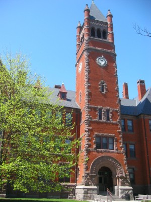

| Home | Academics | Faculty/Staff | Alumni | Projects | Gallery | Careers |
|
|
Gettysburg's computer science program can prepare you for any career where clear and logical thinking are valued. Our courses contain the technical aspects of computer science, but they also give equal attention to helping students communicate clearly and learn the independence necessary to carry an algorithmic way of thought into their future work, whether it be graduate study, a related discipline, or any career that values critical thinking. Most students find that a major in computer science consists of more than just going to the required classes. There are numerous possibilities for involvement including colloquia and seminars, programming contests, department employment, and research opportunities. More information about the Computer Science department can be found on Gettysburg College's official departmental website. Other pages on this site...
|

Glatfelter Hall: Home of Computer Science. |
|
Department of Computer Science 300 North Washington St. Campus Box 402 Gettysburg, PA 17325 |
Phone: 717-337-6630 Fax: 717-337-6638 E-mail: chelfric@gettysburg.edu |